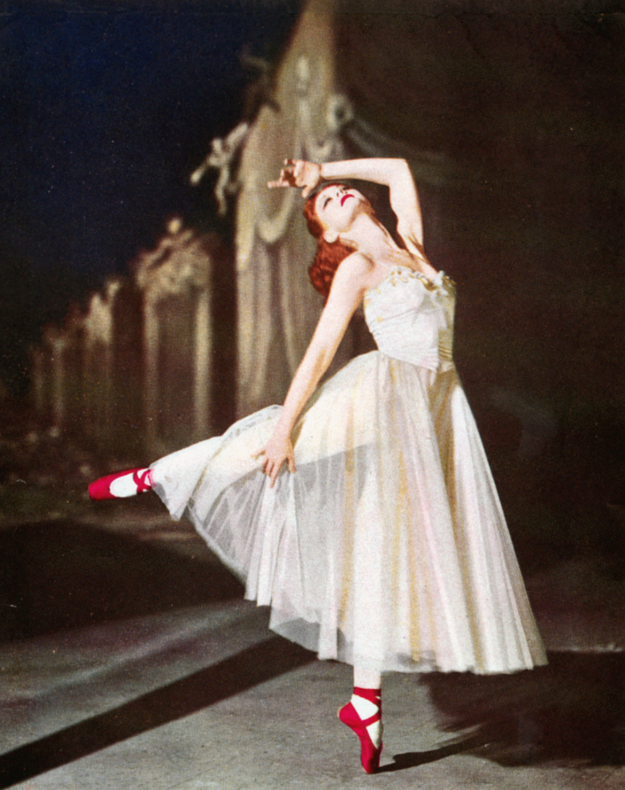
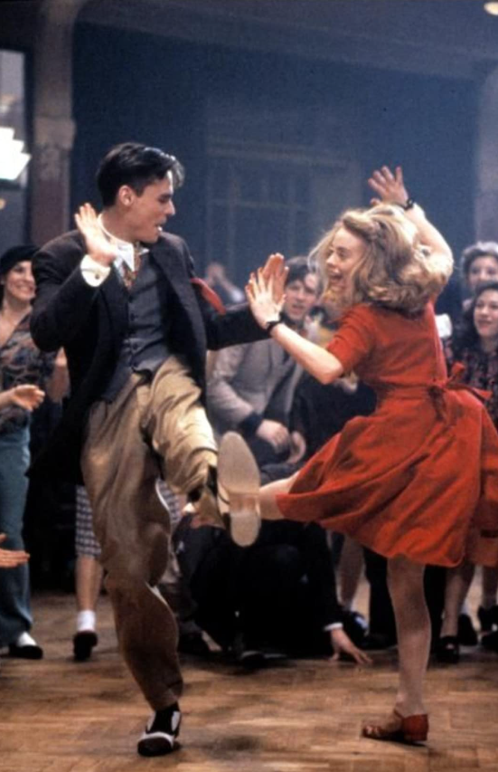

Ballet
why the best?
: it's beauty and it's grace
: root of LOTS of dance
: captures emotions and tells stories in the best ways possible
: has YEARS of effort behind every dancer and performance
: visualizes the horrors of artistic pursuits/obsessions (see the movie The Red Shoes, dir. The Archers)
Tap

why the best?
: prevalent in Hollywood's Golden Age musical movies
: IMPRESSIVE footworks
: the sound of shoes against the board (o′┏▽┓｀o)
: when you want to stomp your feet because you're angry but you have Filipino parents (#dumadabog ka ba?!)
Jazz

why the best?
: BOB FOSSE
: THE ATTITUDE AND TENSION
: accurately shows a dancer's confidence
: THE EXTENSIONS OMG
Swing
why the best?
: VINTAGE TEENAGE ROMANCES
: Benny Goodman and Glenn Miller's music
: dance parties
: THE ENERGY
: gave us a dancing Robert Sean Leonard (o′┏▽┓｀o)
Latino

why the best?
: THE SPICE
: ATTITUDE
: tension is too felt